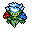
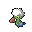

Pokédex / #407
Roserade #407
GrassPoison
Each of its hands contains different toxins, but both hands can jab with near-fatal power.
Generation 4 · Sinnoh

Stats
| Attack | 70 | |
|---|---|---|
| Defense | 65 | |
| Sp. Atk | 125 | |
| Sp. Def | 105 |
In the wild
| Wild level | 50–60 |
|---|---|
| HP | 60 |
| Experience | 10 |
| Egg groups | Fairy, Grass |
Evolution
- Evolves from Roselia at level 60, with a Shiny Stone.
Moves
| Level | Move | Type | Category | Power | Energy | Cooldown | Effect | |
|---|---|---|---|---|---|---|---|---|
| 1 | Tackle | Normal | Physical | 15 | 15 | 1s | Tackle is one of the most common and basic moves a Pokemon learns. It deals damage with no additional effects. | |
| 5 | Absorb | Grass | Special | 20 | 35 | 5s | Absorb deals damage and the user will recover 50% of the HP drained. | |
| 10 | Poison Sting | Poison | Physical | 15 | 20 | 5s | Poison Sting inflicts damage and has a 30% chance of poisoning the target. | |
| 15 | Magical Leaf | Grass | Special | 60 | 60 | 9s | Magical Leaf deals damage and ignores changes to the Accuracy and Evasion stats. | |
| 20 | Stun Spore | Normal | Status | – | 55 | 10s | Stun Spore paralyzes the target. | |
| 25 | Sludge Bomb | Poison | Special | 90 | 105 | 21s | Sludge Bomb inflicts damage and has a 30% chance of poisoning the target. | |
| 30 | Synthesis | Grass | Status | – | 150 | 120s | Synthesis restores the user's current HP based on the weather conditions. Under normal conditions Synthesis will restore ½ of the user's total HP. | |
| 35 | Razor Leaf | Grass | Physical | 18 | 60 | 7s | Razor Leaf deals damage and has an increased critical hit ratio. | |
| 40 | Dazzling Gleam | Fairy | Special | 80 | 90 | 18s | The user damages opposing Pokemon by emitting a powerful flash. | |
| 45 | Energy Ball | Grass | Special | 90 | 95 | 15s | Energy Ball deals damage and has a 10% chance of lowering the target's Special Defense by one stage. | |
| 50 | Grass Whistle | Grass | Status | – | 100 | 60s | Grass Whistle puts the target to sleep. | |
| 55 | Giga Drain | Grass | Special | 75 | 95 | 12s | Giga Drain deals damage and the user will recover 50% of the HP drained. | |
| 60 | Petal Blizzard | Grass | Physical | 90 | 90 | 15s | The user stirs up a violent petal blizzard and attacks everything around it. | |
| 65 | Petal Dance | Grass | Special | 120 | 120 | 20s | The user attacks for 2-3 turns and then becomes confused. | |
| 70 | Aromatherapy | Grass | Status | – | 120 | 60s | Aromatherapy cures the user and friend's of sleep, poison, paralysis, freeze and burn. | |
| 75 | Mega Drain | Grass | Special | 40 | 65 | 12s | Mega Drain inflicts damage, and 50% of the damage dealt to the target is restored to the user. The amount of HP recovered is always rounded down. | |
| 80 | Leech Seed | Grass | Status | 5 | 65 | 20s | Leech Seed plants a seed on the target. At the end of each turn that the target is under the effect of Leech Seed, the target's HP will be drained, and the same amount of HP will be restored to the target's opponent. Leech Seed will not work against Grass-type Pokemon. | |
| 85 | Leaf Storm | Grass | Special | 13 | 140 | 32s | Leaf Storm deals damage but lowers the user's Special Attack by two stages after attacking. |
Field abilities
CutFlash
Special abilities
Natural CurePoison Point
Egg moves
ExtrasensoryGiga DrainGrass WhistleLeaf StormMind ReaderPin MissileRazor LeafSeed BombSleep PowderSynthesis
Technical machines
Bullet SeedDouble TeamEnergy BallFacadeGiga DrainHidden PowerHyper BeamPoison JabProtectRain DanceRestSecret PowerShadow BallSludge BombSolar BeamSubstituteSwords DanceToxic
Drops
| Item | Amount | Chance | |
|---|---|---|---|
| seed | 1–6 | 88.2% | |
| bamboo leaves | 1 | 70.6% | |
| frostbite herb | 1 | 70.6% | |
| leaf pendant | 1 | 35.3% | |
| leaf | 1 | 19.6% | |
| cure herb | 1 | 17.6% | |
| bunch of ripe rice | 1 | 14.1% | |
| sharp razor | 1 | 14.1% | |
| gracidea | 1 | 13.1% | |
| revival herb | 1 | 13.1% | |
| tropical leaf | 1 | 11.8% | |
| forbidden fruit | 1 | 7.06% | |
| dark claws | 1 | 5.88% | |
| onigiri | 1–5 | 5% | |
| grey-blue powder | 1 | 4.41% | |
| dark crystal | 1 | 3.53% | |
| astral source | 1 | 3.53% | |
| exotic feather | 1 | 1.18% | |
 | roserade doll | 1 | 0.1% |
| Meadow Plate | 1 | 0.05% | |
| Dread Plate | 1 | 0.05% | |
| Shiny Stone | 1 | 0.02% | |
| held miracle seed | 1 | 0.01% | |
| held black glasses | 1 | 0.01% |